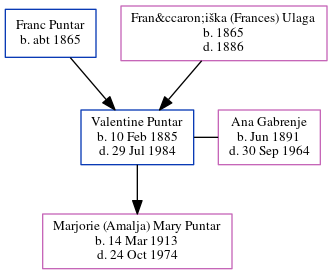

Valentine Puntar 1885 - 1984
[ Home ] | [ Calendar ] | [ Surnames Index ] | [ Census Index ] | [ Family History ]A before he immigrated, valentine was a flax farmer. he wore an earring and was half gypsy and the child of Franc Puntar (a weaver and church caretaker) and Frančiška (Frances) Ulaga, Valentine Puntar, the great-grandfather of Michele Copp (née Phillips), was born in Bezuljak, Austria on Feb 10, 18851,2,3,4,5,6,7 and married Ana Gabrenje (with whom he had 1 child, Marjorie (Amalja) Mary) in 1912.
During his life, he was living in Davis, Tucker, West Virginia in 19308 and in 19351; in Davis, Tucker, West Virginia, USA on Apr 1, 19401 and in 19502; in Not Stated, Tucker, West Virginia7; and in Tucker7. In 1913 he arrived in New York, New York. On Oct 20, 1913 he arrived in New York, New York. He traveled from Trieste.
He died on Jul 29, 1984 in Davis, Tucker, WV USA5 and was buried in Thomas, Tucker County, West Virginia after Jul 29, 19845.
Parents
- Franc Eske was born c. 1865
- Frančiška (Frances) was born in 1865
Children
- Marjorie (Amalja) Mary was born on Mar 14, 1913
Citations
- 1940 United States Federal Census Ancestry.com Operations, Inc. (Age: 55; Marital Status: Married; Relation to Head of House: Head)
- 1950 United States Federal Census Ancestry.com Operations, Inc. (Department of Commerce. Bureau of the Census. 1913-1/1/1972. Population Schedules for the 1950 Census, 1950 - 1950. Washington, DC: National Archives at Washington, DC. Population Schedules for the 1950 Census, 1950 - 1950. NAID: 43290879. Records of the Bureau of the Census, 1790 - 2007, Record Group 29. National Archives at Washington, DC., Washington, DC.) (Relation to Head: Head; Marital Status: Mar)
- New York Passenger Lists, 1820-1957 Online publication - Provo, UT, USA: The Generations Network, Inc., 2006.Original data - Passenger Lists of Vessels Arriving at New York, New York, 1820-1897; (National Archives Microfilm Publication M237, 675 rolls); Records of the U.S. Customs Service, R
- U.S. World War II Draft Registration Cards, 1942 Online publication - Provo, UT, USA: The Generations Network, Inc., 2006.Original data - United States, Selective Service System. Selective Service Registration Cards, World War II: Fourth Registration. National Archives and Records Administration Branch l
- U.S., Find A Grave Index, 1600s-Current Ancestry.com Operations, Inc.
- West Virginia, Naturalization Records, 1814-1991 Ancestry.com Operations, Inc.
- World War I Draft Registration Cards, 1917-1918 Online publication - Provo, UT, USA: The Generations Network, Inc., 2005.Original data - United States, Selective Service System. World War I Selective Service System Draft Registration Cards, 1917-1918. Washington, D.C.: National Archives and Records Admi
- 1930 United States Federal Census Online publication - Provo, UT, USA: MyFamily.com, Inc., 2002.Original data - United States of America, Bureau of the Census. Fifteenth Census of the United States, 1930. Washington, D.C.: National Archives and Records Administration, 1930. T626, 2,667 rol
Family Tree
Generated by ged2site. Last updated on Jun 6, 2024